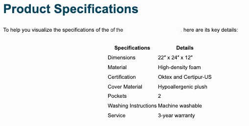

Shoulder surgery can be a difficult experience, but having a 45 degree wedge pillow (can) help reduce the pain and discomfort. It's an important tool in the recovery process! The pillow positions the body at a certain angle which helps to put less stress on the damaged shoulder area and encourages healing. Moreover, it also aids in reducing inflammation around the affected area.
However, it is essential to remember that this type of pillow should only be used after being advised by your doctor or physical therapist. Neglecting proper use of the wedge pillow may cause further damage and delay recovery. But with correct usage, you'll likely see improvement in your shoulder condition soon.
Furthermore, using a 45 degree wedge pillow might also prevent recurrence of injury since it keeps the body correctly aligned during sleep and activities such as watching television or reading books. In addition to aiding post-surgery recovery, this kind of pillow can also provide comfort when sleeping or sitting for extended periods (of time).
In conclusion, although using a 45 degree wedge pillow after shoulder surgery requires guidance from healthcare professionals and is not a cure-all solution for all injuries, it is an effective aid that can significantly reduce pain and speed up recovery!
